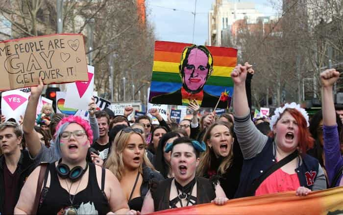

Ned is an intellectual bushranger. He has spent the past ten years in the leftist corridors of Australia’s universities and civil service and he’s had enough.


Australia is currently voting in a postal survey on whether to legalise gay marriage. A clear majority of Australians support gay marriage but I predict that the “No” side will win the vote. When this occurs, the radical left will have no one to blame but themselves. There is a strong feeling of a Trump or Brexit type upset in the air, but the main reason that the “No” campaign will win is because the “Yes” side’s campaign has alienated the sensible center.
Australia is one of the few countries in the world that has compulsory voting in elections but this postal survey is not compulsory and I would be surprised if turnout is much over 50%. Opinion polls over recent years have consistently shown that around two thirds of Australians support gay marriage, but the expected low turnout makes the result of the postal survey hard to predict. Just as the “silent” Trump voters skewed the exit polls in the 2016 US Presidential election, there is probably also around 5% of Australians who are telling pollsters that they support gay marriage but who will in fact vote no.
The “Yes” campaign is led by around half of the ruling centre-right Liberal/National government, including Australia’s Prime Minister Malcolm Turnbull, plus the opposition centre-left Labor Party and the far-left Greens Party. Almost all prominent Australians are supporting the “Yes” campaign.
The “No” campaign is led by religious organisations and a few conservative politicians. The fact that most Australian Muslims will undoubtedly vote no is an ironic turn for the leftists who have campaigned so hard to allow them into the country. The overwhelming support for the “Yes” side amongst prominent Australians from politics to media to entertainment to sport is reminiscent of opposition to Trump in the US and to Brexit in the UK.
The “Yes” side is not really making much of an argument, they just keep saying “love is love”. Presumably they do not think that incest, paedophilia or polygamy are ok because “love is love”, but they haven’t elaborated.
The “No” side is not making much of an argument about gay marriage either. Instead, it is arguing that gay marriage is another step towards political correctness and denial of free speech and religious freedom. Australia’s former conservative Prime Minister Tony Abbott is urging a “no” vote to “stop political correctness in its tracks”.

The left is making two key strategic errors in its campaign. Firstly, it is arguing that there should not be a public debate or public vote on this issue. Secondly, it is bullying, persecuting and harassing anyone brave enough to declare that they will vote “no”.
The left has long argued against a public vote on same sex marriage saying that it will hurt gay people’s mental health and that straight people should not have the right to decide if gay people have “human rights”. The left does not appear to understand that people don’t like being told what they are and are not allowed to discuss, debate, say or think.
Some of the more radical leftist individuals and groups have also harassed, bullied and persecuted people who oppose gay marriage. On September 22, a “Yes” campaigner head butted Tony Abbott. A former champion boxer, Abbott assured the media he was “entirely unscathed” but said that he worries about “the brave new world of same-sex marriage if this is how some of the people who are most enthusiastically supporting it are behaving”.
In Canberra, an 18-year-old woman named Madeline was fired from her job at a children’s party business for advocating a “no” vote on her private Facebook wall. Capital Kids Parties owner Madlin Sims said she fired Madeline because “advertising your desire to vote no for SSM [same-sex marriage] is, in my eyes, hate speech”.
In Brisbane, the National Union of Students organised a rally outside a church to harass the attendees at a “vote no” meeting. The rally turned violent and one woman was arrested.
When “no” campaigners hired Skywriting Australia to write “vote no” in the sky above Sydney the business was abused on social media and the business owner received a torrent of harassing text messages including the following:
…you really are a shit human. You’re definitely the biggest piece of shit in Australia today. Probably tomorrow too. Hope you’re proud of yourself. Don’t be surprised by the hate coming for you. Titt for tatt, it’s only fair, right? You stupid, ignorant, remorseless, pathetic, old, LOSER.
The organisers of the skywriting later reported that GoFundMe “has decided to freeze our funds, until we give our names and locations. This is on the back of a massive amount of hateful messages we have received by people who want to silence our message and personally attack us.”
Of course, there are people on the “No” side who have behaved inappropriately too. The difference is that within the “Yes” camp the arguments that there should be no debate, or that those who oppose gay marriage should not be allowed to state their views, is mainstream.
Unlike the United States, Australia does not have constitutionally protected free speech. The Australian Parliament has passed laws imposing fines of up to $12,600 for anyone “vilifying” or “intimidating” another person during the gay marriage debate. I expect these laws will be enforced selectively against “no” campaigners for “homophobic” comments.
We shouldn’t underestimate the radical left, but we shouldn’t overestimate them either. Let them be themselves and they will alienate ten people for every one they convert. We on the right must not get down into the gutter to fight with these radical leftists or we will come out at least as dirty as they are. Let’s maintain the moral high ground and promote civilised debate, free speech, and non-violence.
Read more: Is Feminism Its Own Worst Enemy?